Functions
Lecturer: Truong-Son Van
tsvan@hcmut.edu.vn
Why Calculus?
Calculus is the language for describing change, accumulation, and optimization.
How does position change with time?
How do quantities vary from point to point?
How do we improve a model by changing its parameters?
Navier-Stokes: Fluid Motion
\[ \rho\left(\frac{\partial \mathbf u}{\partial t} +(\mathbf u\cdot\nabla)\mathbf u\right) =-\nabla p+\mu\Delta\mathbf u+\mathbf f \]
The velocity field \(\mathbf u(x,y,z,t)\) changes in time and space. Calculus measures acceleration, pressure gradients, and diffusion of momentum.
Maxwell: Fields And Waves
\[ \nabla\cdot\mathbf E=\frac{\rho}{\varepsilon_0}, \qquad \nabla\times\mathbf B-\frac1{c^2}\frac{\partial\mathbf E}{\partial t} =\mu_0\mathbf J \]
Electric and magnetic fields are functions on space and time. The symbols \(\nabla\) and \(\frac{\partial}{\partial t}\) describe how those fields vary.
Einstein: Space-Time Curvature

\[ G_{\mu\nu}+\Lambda g_{\mu\nu} =\frac{8\pi G}{c^4}T_{\mu\nu} \]
Geometry tells matter how to move; matter tells geometry how to curve. Calculus enters through curvature, rates of change, and differential geometry.
{kind=link}
Schrodinger: Quantum Waves
\[ i\hbar\frac{\partial\psi}{\partial t} =\widehat H\psi \]
The wave function \(\psi\) evolves according to a differential equation. Here calculus describes how probability waves move, spread, and interfere.
AI: Learning By Gradients
\[ L(\theta)=\frac1N\sum_{i=1}^N \ell\big(f_\theta(x_i),y_i\big), \qquad \theta_{k+1}=\theta_k-\eta\nabla_\theta L(\theta_k) \]
Backpropagation is repeated use of the chain rule to compute gradients efficiently. Modern AI learns by following those gradients.
What Calculus 1 Starts Building
1
Functions
inputs, outputs, models
2
Limits
approach and approximation
3
Derivatives
instantaneous change
4
Integrals
accumulated change
We begin with functions because every equation above describes relationships between changing quantities.
Today
- Functions as dependence
- Domain, range, and graph
- Piecewise, composite, one-to-one, and inverse functions
- Function properties
- Elementary functions
- Hyperbolic functions
- Transformations
Sequences begin next class, after the function review is solid.
Course Rhythm
Read the assigned sections and try the warm-up questions.
Work through prompts, examples, and quick checks.
Practice with OpenStax and Stewart.
Functions Arise From Dependence
Circle area depends on radius:
\[A=\pi r^2.\]
World population depends on time:
\[P=P(t).\]
Mailing cost depends on envelope weight:
\[C=C(w).\]
Ground acceleration during an earthquake depends on elapsed time:
\[a=a(t).\]
Four Ways To Represent A Function
1
Verbally
description in words
2
Numerically
table of values
3
Visually
graph
4
Algebraically
formula
Function, Domain, Range
A function \(f\) assigns to each input \(x\) in a set \(X\) exactly one output \(f(x)\).
\[ f:X\to E, \qquad y=f(x) \]
\[ D(f)=\{x\in \mathbb{R}: f(x)\text{ is defined}\}. \]
\[ E(f)=\{f(x):x\in D(f)\}. \]
Graph Of A Function
The graph of \(f\) is the set of all points
\[ (x,f(x)), \qquad x\in D(f). \]
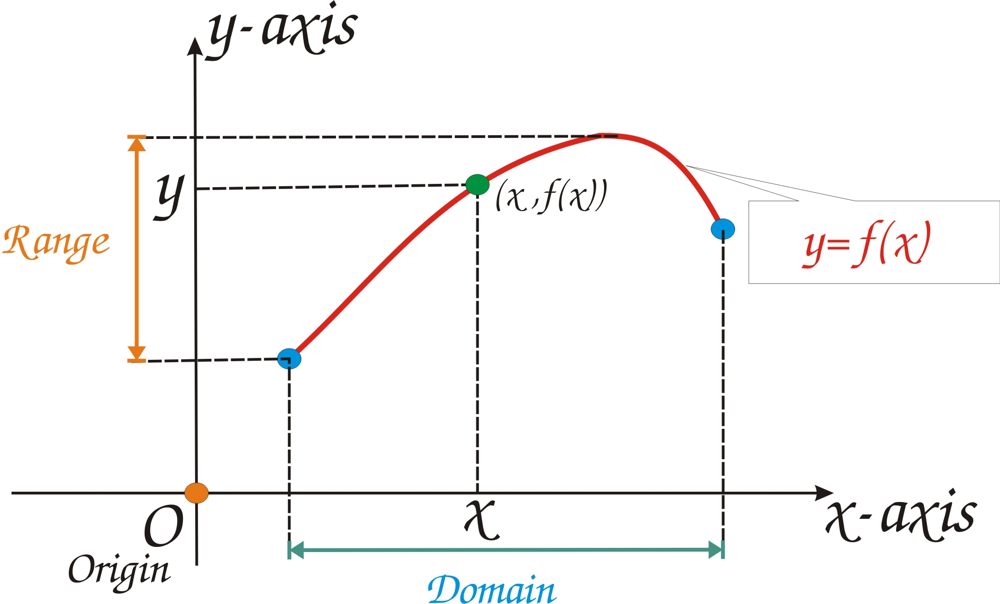
Example: Domain And Range
Find the domain and range of
\[f(x)=\sqrt{x+2}.\]
For \(f(x)\) to be defined,
\[ x+2\geq 0 \Longleftrightarrow x\geq -2. \]
Therefore
\[ D(f)=[-2,\infty), \qquad E(f)=[0,\infty). \]
Piecewise Defined Functions
A piecewise function uses different formulas on different parts of its domain.
\[ f(x)= \begin{cases} 1-x, & x\leq -1,\\ x^2, & x>-1. \end{cases} \]
Quick checks:
\[ f(-2)=3,\qquad f(-1)=2,\qquad f(2)=4. \]
Composite Functions
If \(y=f(u)\) and \(u=g(x)\), then substitution gives
\[y=f(g(x)).\]
The composite function is
\[ (f\circ g)(x)=f(g(x)). \]
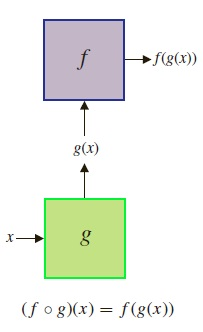
Example: Composition
Let
\[ f(x)=x^2, \qquad g(x)=x^3-7. \]
Find \(f\circ g\) and \(g\circ f\).
\[ (f\circ g)(x)=f(g(x))=(x^3-7)^2. \]
\[ (g\circ f)(x)=g(f(x))=x^6-7. \]
One-To-One Functions
A function \(f\) is one-to-one if it never takes the same value twice:
\[ x_1\neq x_2 \Longrightarrow f(x_1)\neq f(x_2). \]
\(f(x)=x^3\) is one-to-one.
\(g(x)=x^2\) is not one-to-one because
\[g(1)=1=g(-1).\]
Inverse Functions
Let \(f\) be one-to-one with domain \(D\) and range \(E\).
The inverse function \(f^{-1}\) has domain \(E\) and range \(D\), and
\[ f^{-1}(y)=x \Longleftrightarrow f(x)=y. \]
- Write \(y=f(x)\).
- Solve for \(x\) in terms of \(y\).
- Interchange \(x\) and \(y\).
Example: Inverse Function
Find the inverse of
\[f(x)=x^3+2.\]
\[ y=x^3+2 \]
\[ x^3=y-2 \]
\[ x=(y-2)^{1/3} \]
After interchanging \(x\) and \(y\):
\[ f^{-1}(x)=(x-2)^{1/3}. \]
Basic Properties
Where is it defined?
What can it output?
Does it repeat?
Is it increasing or decreasing?
Is it even or odd?
Can the values escape every bound?
Periodic Functions
A function \(f\) is periodic with period \(T>0\) if
\[ f(x+T)=f(x-T)=f(x) \]
whenever the expressions are defined.
\(f(x)=\sin x\) has period \(2\pi\) because
\[ \sin(x+2\pi)=\sin(x-2\pi)=\sin x. \]
Increasing And Decreasing
\[ x_1<x_2 \Longrightarrow f(x_1)<f(x_2). \]
\[ x_1<x_2 \Longrightarrow f(x_1)>f(x_2). \]
- \(f(x)=x\) is increasing on \(\mathbb{R}\).
- \(g(x)=x^2\) is decreasing on \((-\infty,0)\) and increasing on \((0,\infty)\).
- \(h(x)=c\) is neither increasing nor decreasing under the strict definition.
Symmetry
\[f(-x)=f(x).\]
The graph is symmetric about the \(y\)-axis.
\[f(-x)=-f(x).\]
The graph is symmetric about the origin.
\(f(x)=x\) is odd. \(g(x)=x^2\) is even.
Boundedness
- bounded above: \(f(x)\leq M\)
- bounded below: \(f(x)\geq m\)
- bounded: \(|f(x)|\leq C\)
- unbounded: no single \(C\) works
\[ f(x)=\frac{1}{1+x^2} \]
is bounded on \(\mathbb{R}\) because \(0<f(x)\leq 1\).
\[ g(x)=\frac{1}{x} \]
is bounded on \([1,\infty)\) but unbounded on \((0,\infty)\).
For any \(C>0\), choose \(x_0=1/(C+1)\). Then \(x_0\in(0,\infty)\) and \(|g(x_0)|=C+1>C\).
Linear Functions
A linear function has the form
\[y=mx+b.\]
\(m\) is the slope and \(b\) is the \(y\)-intercept.
For two points \((x_1,y_1)\) and \((x_2,y_2)\) with \(x_1\neq x_2\),
\[ m=\frac{y_2-y_1}{x_2-x_1}. \]
Example: Line Through Two Points
Find the slope and equation of the line through \((4,3)\) and \((2,5)\).
\[ m=\frac{5-3}{2-4}=-1. \]
Using point \((4,3)\):
\[ y-3=-1(x-4) \]
so
\[ y=-x+7. \]
Polynomials
\[ P(x)=a_nx^n+a_{n-1}x^{n-1}+\cdots+a_1x+a_0. \]
If \(a_n\neq 0\), the degree is \(n\).
\(P(x)=mx+b\)
\(P(x)=ax^2+bx+c\)
\(P(x)=ax^3+bx^2+cx+d\)
Power Functions
A power function has the form
\[ y=x^\alpha, \qquad \alpha\in\mathbb{R}. \]
The domain, range, monotonicity, and symmetry depend on \(\alpha\).
Example: Square Function
- Domain: \(\mathbb{R}\)
- Range: \([0,\infty)\)
- Decreasing on \((-\infty,0)\)
- Increasing on \((0,\infty)\)
- Even
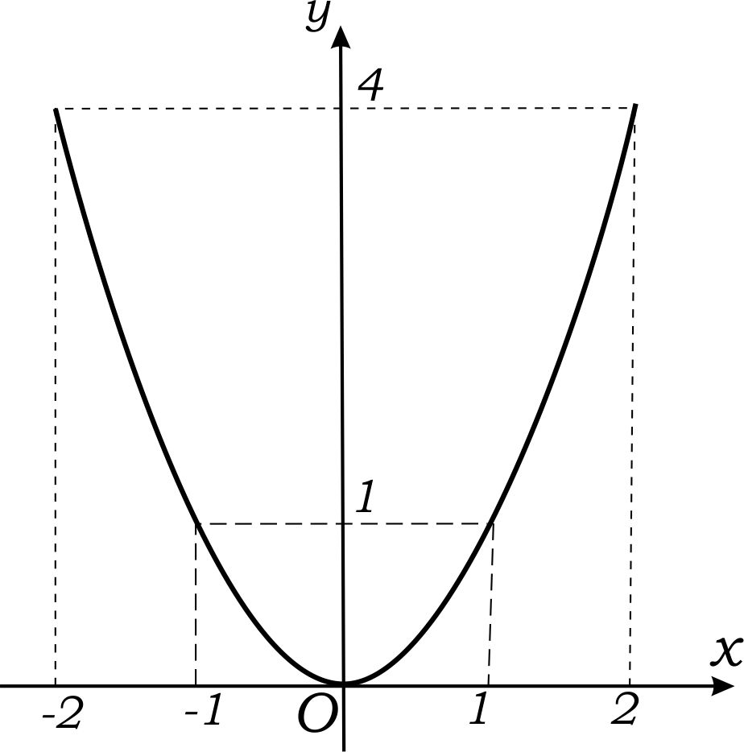
Example: Reciprocal Function
- Domain: \(\mathbb{R}\setminus\{0\}\)
- Range: \((-\infty,0)\cup(0,\infty)\)
- Decreasing on \((-\infty,0)\) and \((0,\infty)\)
- Odd
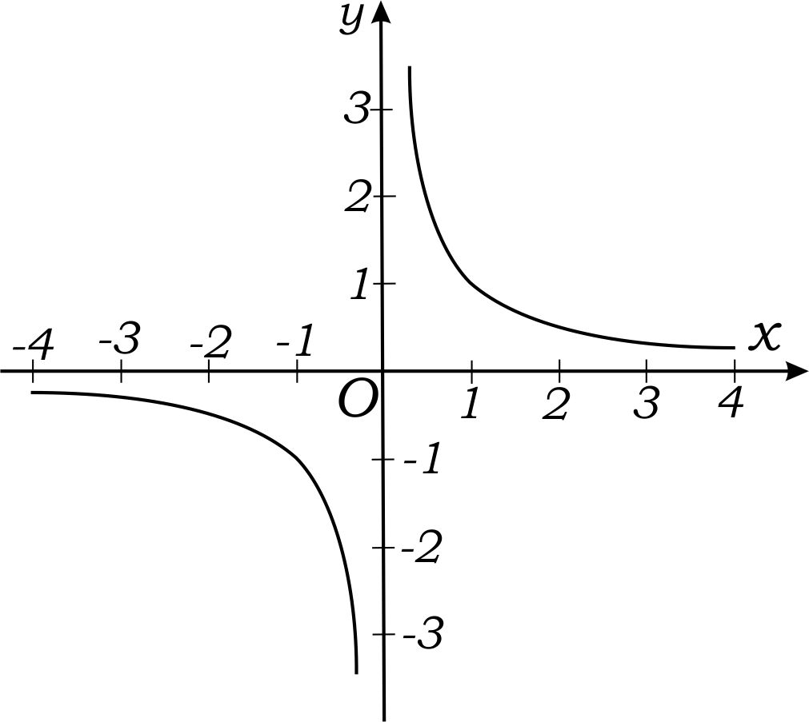
Example: Square Root Function
- Domain: \([0,\infty)\)
- Range: \([0,\infty)\)
- Increasing on \((0,\infty)\)
- No even/odd symmetry
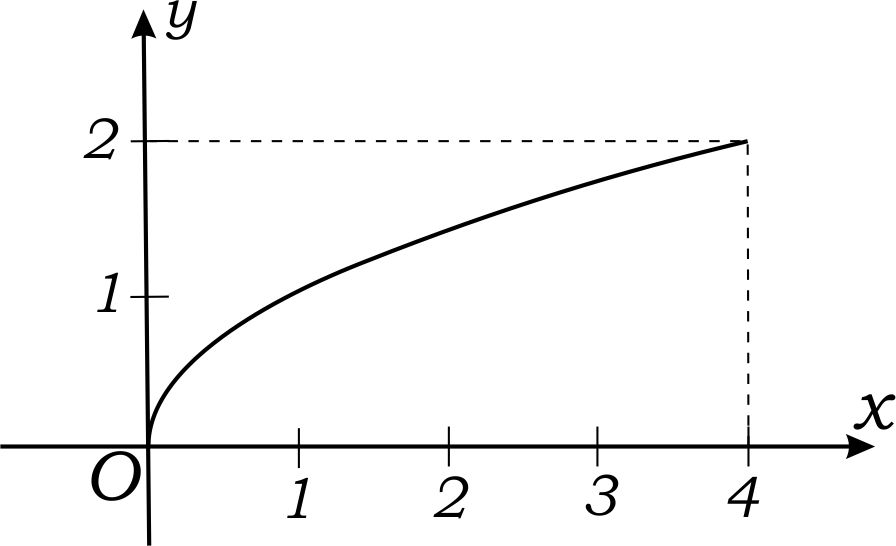
Exponential Functions
\[ y=a^x,\qquad a>0,\quad a\neq 1. \]
\[a^x a^y=a^{x+y},\qquad \frac{a^x}{a^y}=a^{x-y}\] \[\left(a^x\right)^y=a^{xy},\qquad a^{-x}=\frac{1}{a^x}\]
\[a^x b^x=(ab)^x,\qquad \frac{a^x}{b^x}=\left(\frac{a}{b}\right)^x\]
Examples: Exponential Graphs
- Domain: \(\mathbb{R}\)
- Range: \((0,\infty)\)
- Increasing on \(\mathbb{R}\)
- Passes through \((0,1)\)
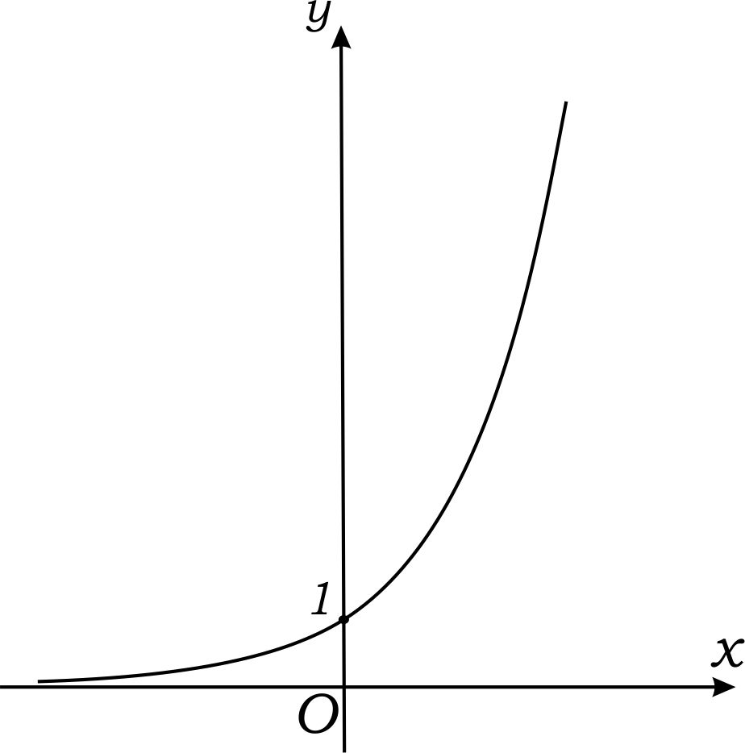
- Domain: \(\mathbb{R}\)
- Range: \((0,\infty)\)
- Decreasing on \(\mathbb{R}\)
- Passes through \((0,1)\)
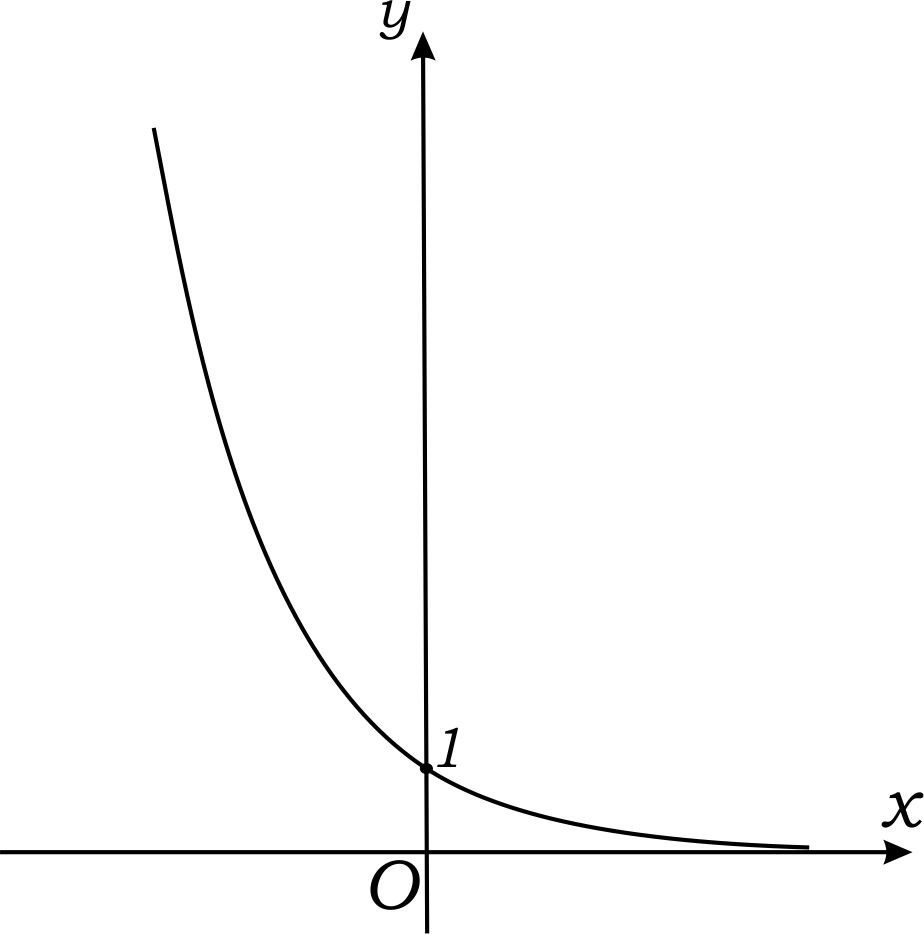
Logarithmic Functions
\[ y=\log_a x,\qquad a>0,\quad a\neq 1. \]
It is the inverse of \(y=a^x\):
\[ y=\log_a x \Longleftrightarrow x=a^y. \]
\[ D=(0,\infty), \qquad E=\mathbb{R}. \]
Logarithm Laws
\[ \log_a(xy)=\log_a x+\log_a y \]
\[ \log_a\left(\frac{x}{y}\right)=\log_a x-\log_a y \]
\[ \log_a\left(\frac1x\right)=-\log_a x \]
\[ \log_{a^\beta}x^\alpha=\frac{\alpha}{\beta}\log_a x \]
Examples: Logarithmic Graphs
- Increasing on \((0,\infty)\)
- Reflection of \(y=a^x\) across \(y=x\)
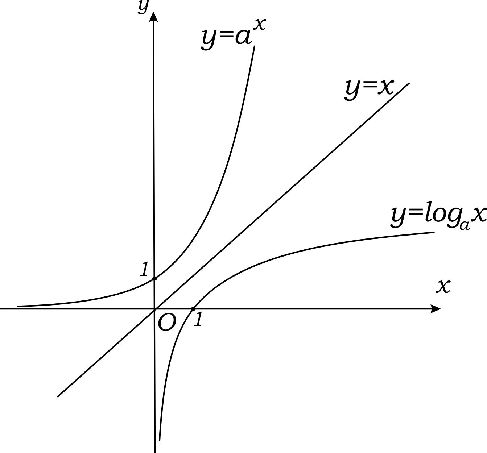
- Decreasing on \((0,\infty)\)
- Reflection of \(y=a^x\) across \(y=x\)
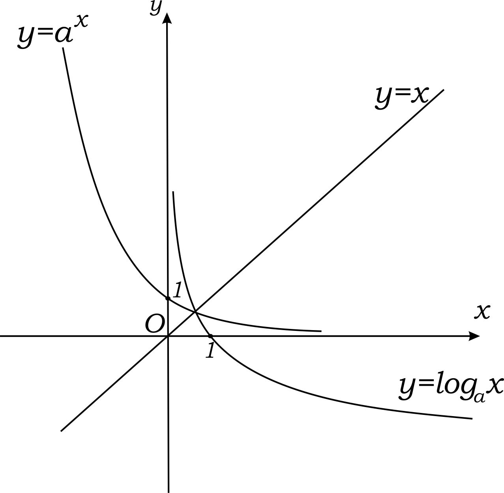
Trigonometric Functions
- domain
- range
- period
- monotonicity on typical intervals
- symmetry
Which basic trigonometric functions are bounded?
Examples: Sine And Cosine
- Domain: \(\mathbb{R}\)
- Range: \([-1,1]\)
- Period: \(2\pi\)
- Odd
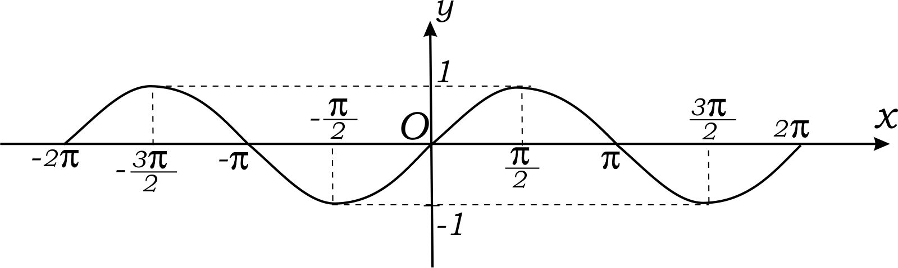
- Domain: \(\mathbb{R}\)
- Range: \([-1,1]\)
- Period: \(2\pi\)
- Even
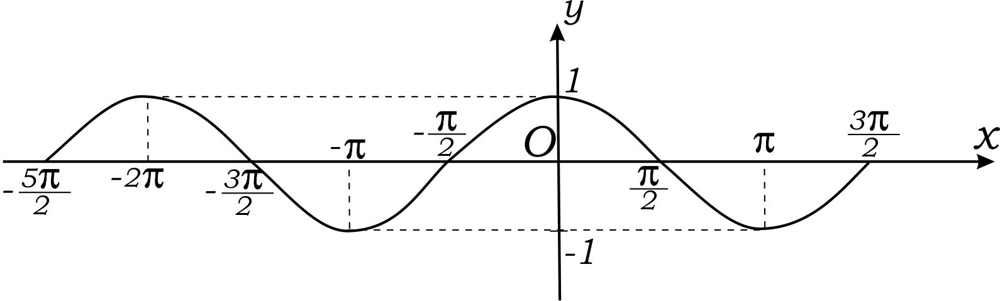
Examples: Tangent And Cotangent
\[y=\frac{\sin x}{\cos x}\]
- Domain: \(\mathbb{R}\setminus\{\frac{\pi}{2}+k\pi:k\in\mathbb{Z}\}\)
- Range: \(\mathbb{R}\)
- Period: \(\pi\)
- Odd
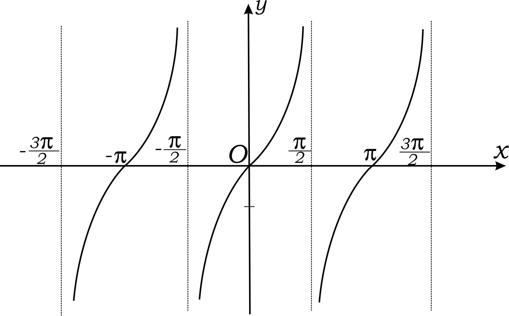
\[y=\frac{\cos x}{\sin x}\]
- Domain: \(\mathbb{R}\setminus\{k\pi:k\in\mathbb{Z}\}\)
- Range: \(\mathbb{R}\)
- Period: \(\pi\)
- Odd
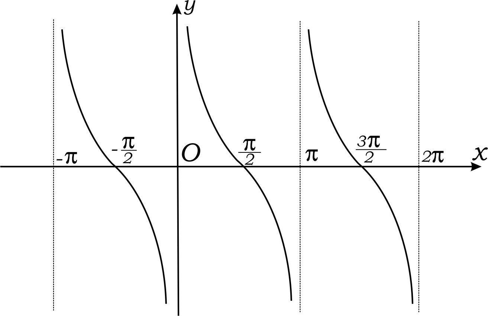
Basic Trigonometric Formulas
\[\sin^2x+\cos^2x=1\] \[\sin 2x=2\sin x\cos x\] \[\sin 3x=3\sin x-4\sin^3x\] \[\sin^2x=\frac{1-\cos 2x}{2}\]
\[\cos 2x=\cos^2x-\sin^2x\] \[\cos 2x=2\cos^2x-1=1-2\sin^2x\] \[\cos^2x=\frac{1+\cos 2x}{2}\]
Inverse Trigonometric Functions
\[ y=\arcsin x \Longleftrightarrow x=\sin y \]
\[ -1\leq x\leq 1,\quad -\frac{\pi}{2}\leq y\leq\frac{\pi}{2} \]
\[ y=\arccos x \Longleftrightarrow x=\cos y \]
\[ -1\leq x\leq 1,\quad 0\leq y\leq\pi \]
\[ y=\arctan x \Longleftrightarrow x=\tan y \]
\[ x\in\mathbb{R},\quad -\frac{\pi}{2}<y<\frac{\pi}{2} \]
Hyperbolic Functions
Hyperbolic functions are built from exponentials:
\[ \sinh x=\frac{e^x-e^{-x}}{2},\qquad \cosh x=\frac{e^x+e^{-x}}{2}. \]
They are not periodic like sine and cosine, but they satisfy identities that look similar to trigonometric identities.
Examples: Hyperbolic Sine And Cosine
- Domain: \(\mathbb{R}\)
- Range: \(\mathbb{R}\)
- Increasing on \(\mathbb{R}\)
- Odd
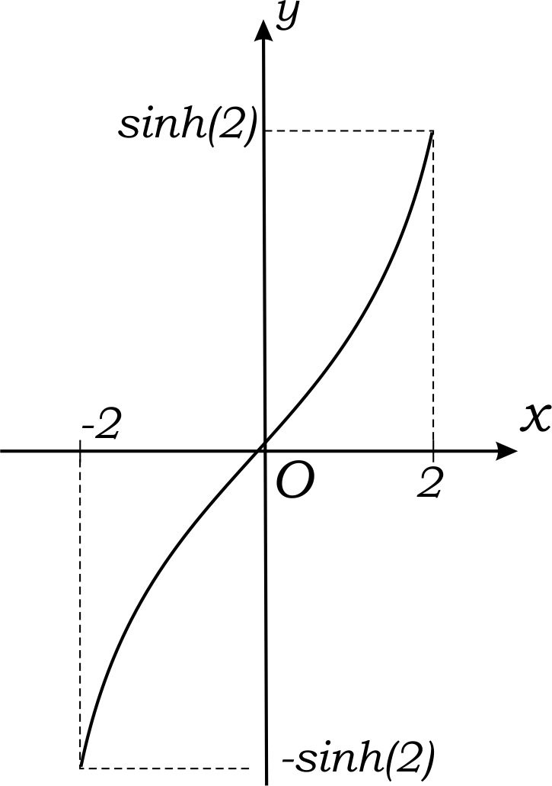
- Domain: \(\mathbb{R}\)
- Range: \([1,\infty)\)
- Decreasing on \((-\infty,0)\)
- Increasing on \((0,\infty)\)
- Even
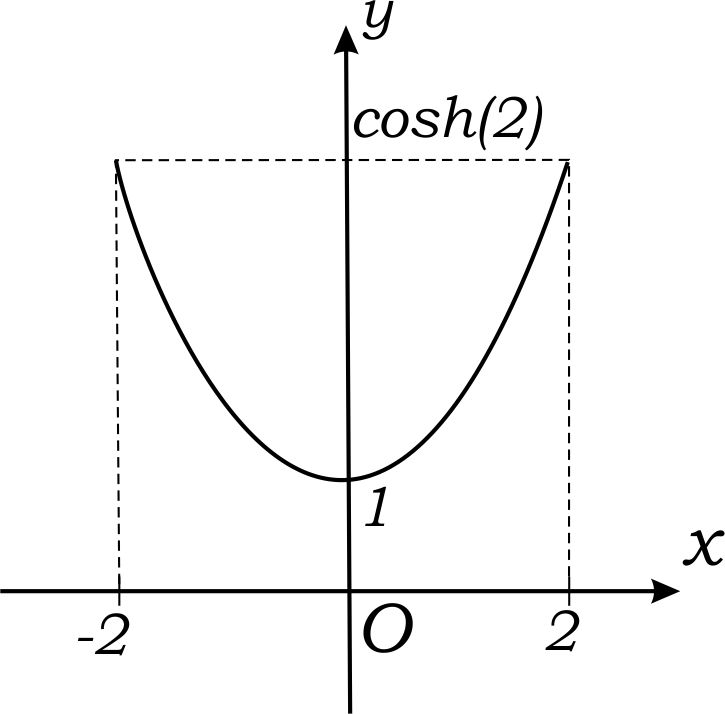
Hyperbolic Tangent And Cotangent
\[ \tanh x=\frac{\sinh x}{\cosh x} \]
\[ \coth x=\frac{\cosh x}{\sinh x} \]
- \(\tanh x\) is defined for all real \(x\).
- \(\coth x\) is undefined at \(x=0\).
Hyperbolic Identities
\[\sinh(-x)=-\sinh x\] \[\cosh(-x)=\cosh x\] \[\cosh^2x-\sinh^2x=1\]
\[\cosh^2x+\sinh^2x=\cosh 2x\] \[\sinh(x+y)=\sinh x\cosh y+\cosh x\sinh y\] \[\cosh(x+y)=\cosh x\cosh y+\sinh x\sinh y\]
New Functions From Old Functions
For \(c>0\):
- \(f(x)+c\): up
- \(f(x)-c\): down
- \(f(x+c)\): left
- \(f(x-c)\): right
For \(c>1\):
- \(cf(x)\): vertical stretch
- \(\frac1c f(x)\): vertical shrink
- \(f(cx)\): horizontal shrink
- \(f(\frac1c x)\): horizontal stretch
- \(-f(x)\) and \(f(-x)\): reflections
Example: Transform \(y=x^2\)
Given \(y=x^2\), graph:
- \(y=f(x)=(x-2)^2-3\)
- \(y=|f(x)|=|(x-2)^2-3|\)
- \(y=f(|x|)=(|x|-2)^2-3\)
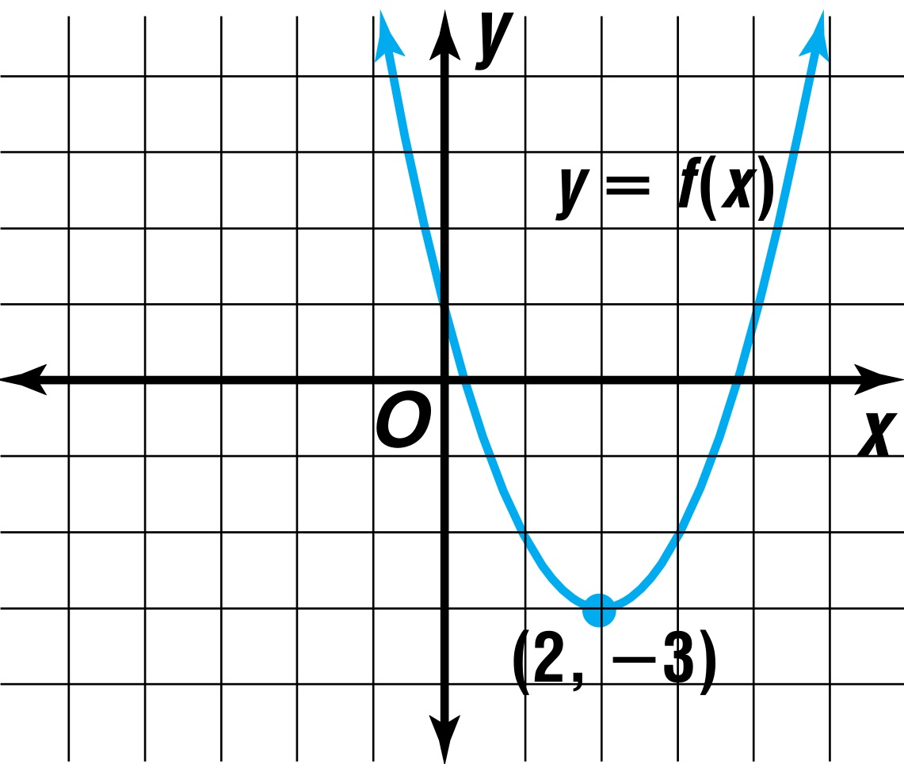
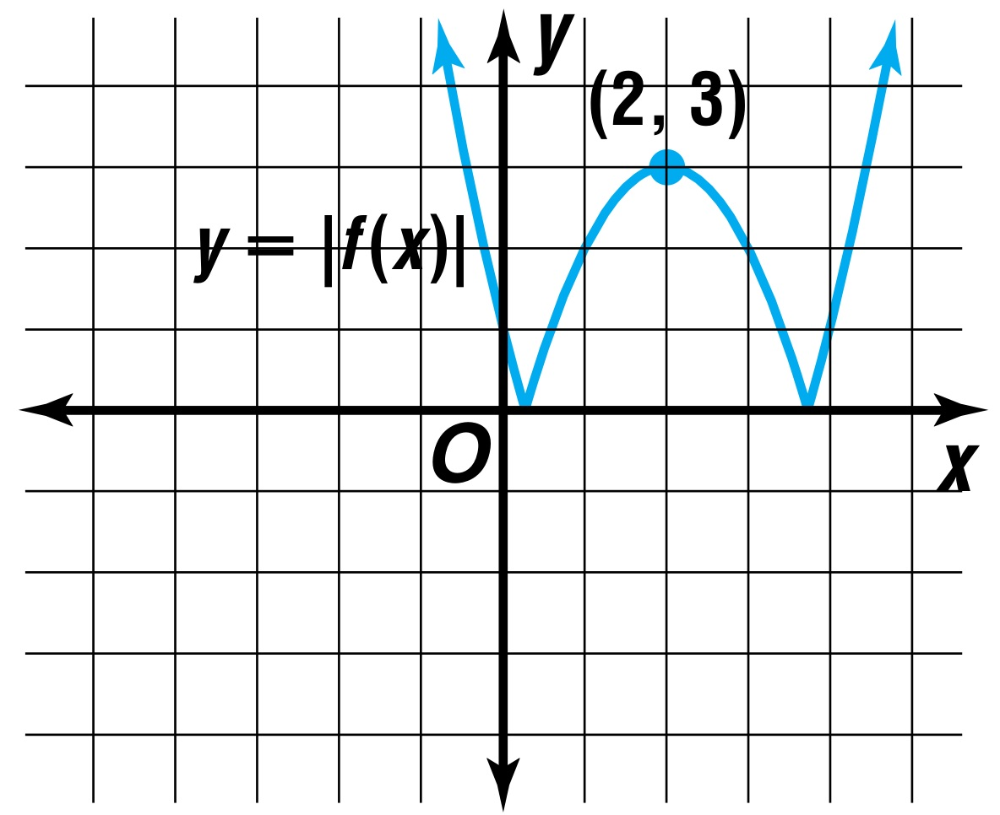
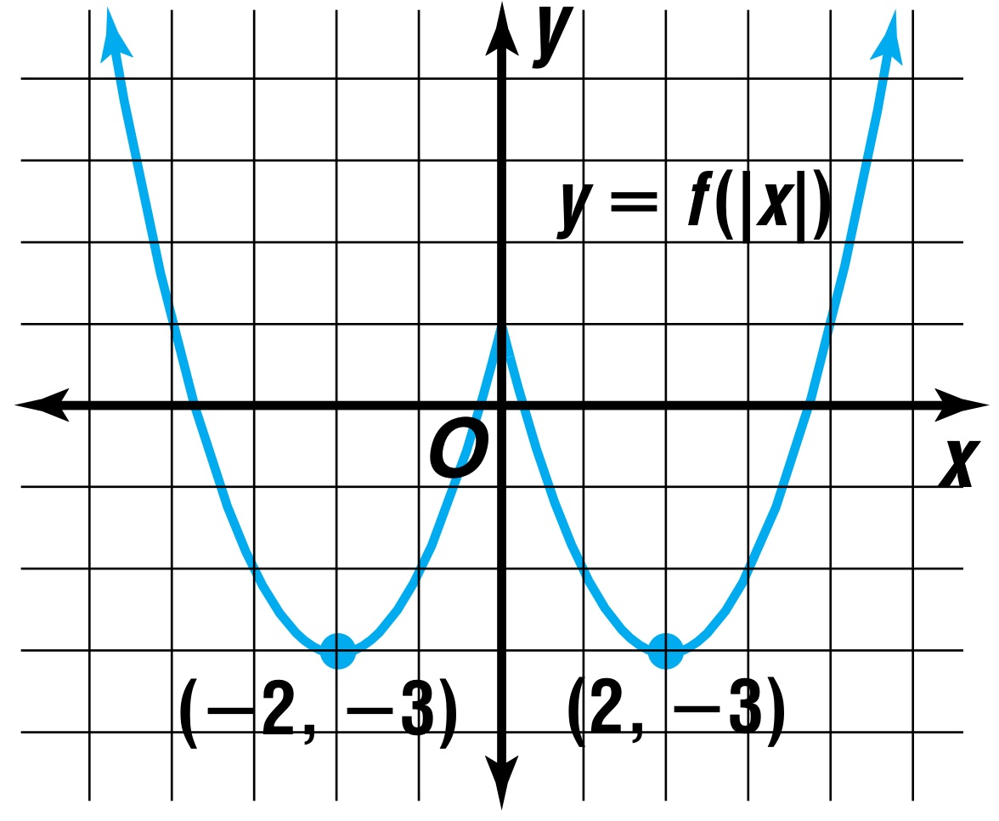
Example: Transform \(y=\cos x\)
Given \(y=\cos x\), graph:
- \(y=2\cos x\)
- \(y=\frac12\cos x\)
- \(y=\cos(2x)\)
- \(y=\cos\left(\frac12 x\right)\)
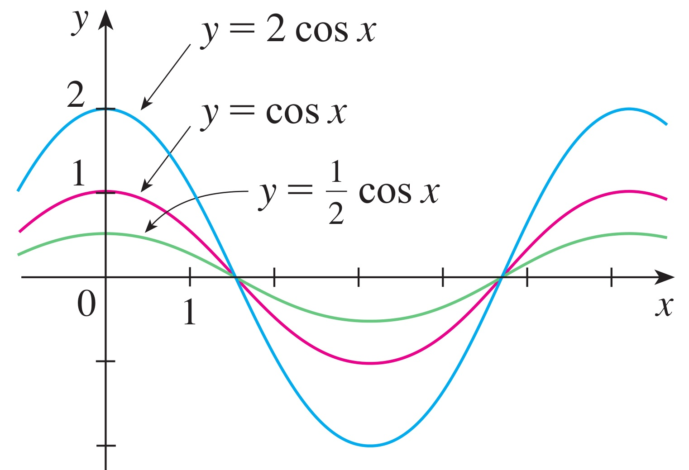
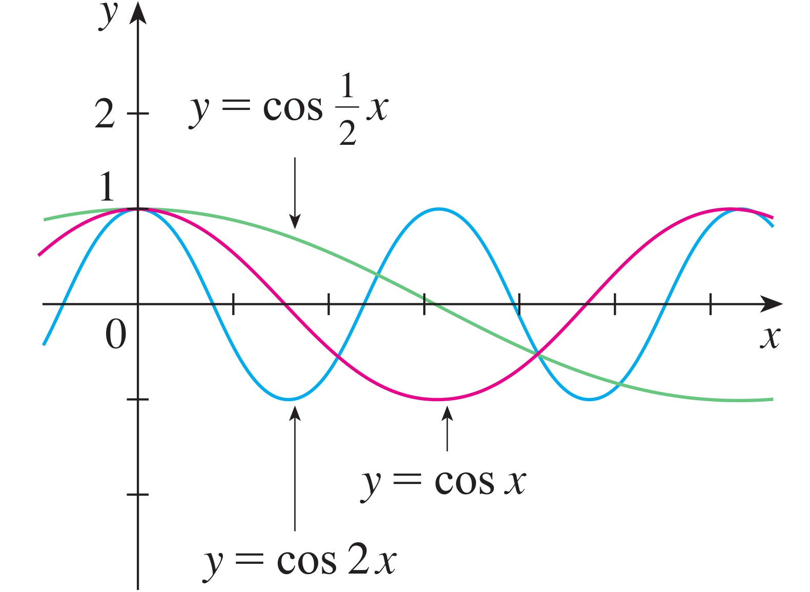